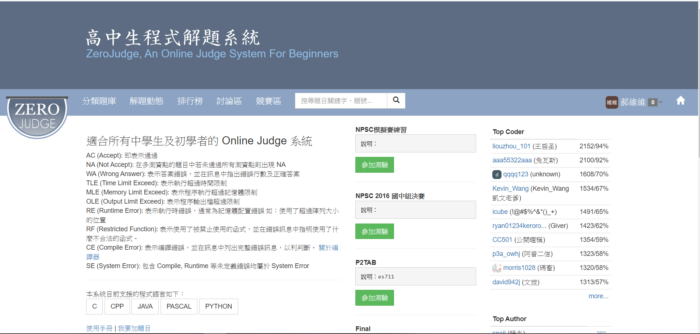
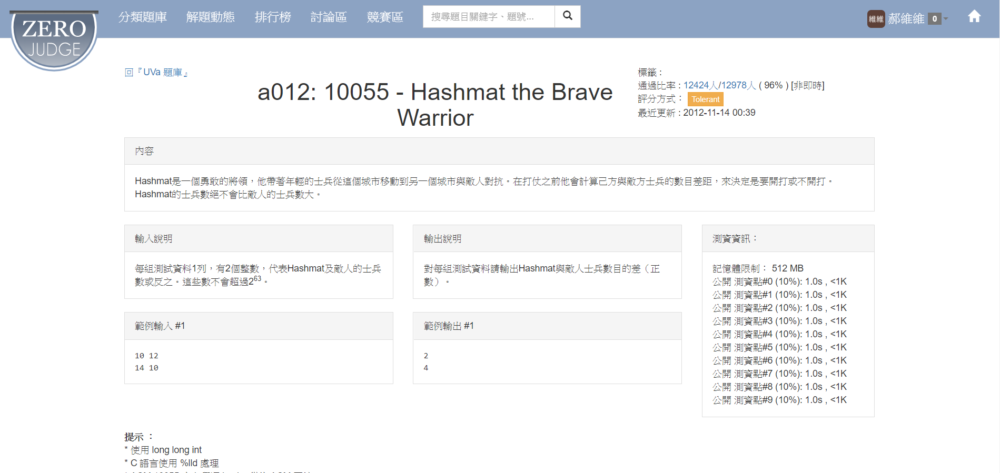
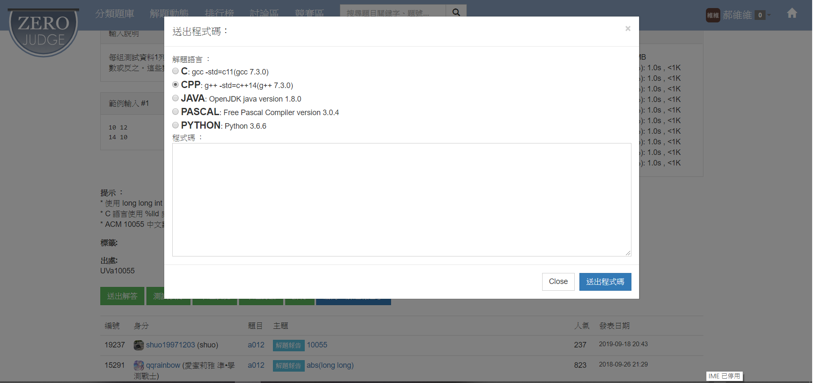

我要介紹的網頁是高中生程式解題系統(zero judge)，雖然他是設計for高中生的程式解題系統。 但他不限於高中生，對所有學習編程的人皆很友善。且題目齊全，分類詳細。
link:
高中生程式解題系統(Zero judge)
優點
我認為這個網站的優點是，他有詳細的題目分類，其中包含
- 基礎題庫
- 競賽題庫
- APCS
- Uva題庫
- 原創題庫
各式題目的數量皆充足，適合所有階段的編程學習者。
並且其具有基礎之討論區，可成為老手及新手之討論平台。發揮母雞帶小雞之功用。
並且其具有排行榜功能，能夠互相砥礪互相較勁。甚至還有定期舉辦競賽。可供大家切磋實力。
並且有測驗功能可以檢測答案是否正確

